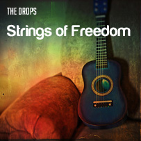

Play all
Strings of Freedom
Recording began in 2009 and and we finally finished this album in the
end of this month. Strings of Freedom is our acoustic achievement. We dedicate
it to all our families and friends. Its about living freely and enjoy life.
Our Resolve
Play
Add to playlist
Our Resolve
music/album1/ramblinglibrarian_-_Our_Resolve.mp3
music/album1/ramblinglibrarian_-_Our_Resolve.ogg
How do I make you see
Play
Add to playlist
How do I make you see
music/album1/ramblinglibrarian_-_Rock_Version_-_How_Do_I_Make_You_See_1.mp3
music/album1/ramblinglibrarian_-_Rock_Version_-_How_Do_I_Make_You_See_1.ogg
Play all
Time to Shine
Experimental sounds for enjoying life and music as it comes. This album was inspired by the great
Eduardo MacGregor who experimented with double sided guitars to achieve a unique sound experience.
Time to shine wants to make people shine.
Bass (Drifting)
Play
Add to playlist
Bass (Drifting)
music/album2/ramblinglibrarian_-_Bass_(Drifting).mp3
music/album2/ramblinglibrarian_-_Bass_(Drifting).ogg
Briefly us
Play
Add to playlist
Briefly us
music/album2/ramblinglibrarian_-_Briefly_Us.mp3
music/album2/ramblinglibrarian_-_Briefly_Us.ogg